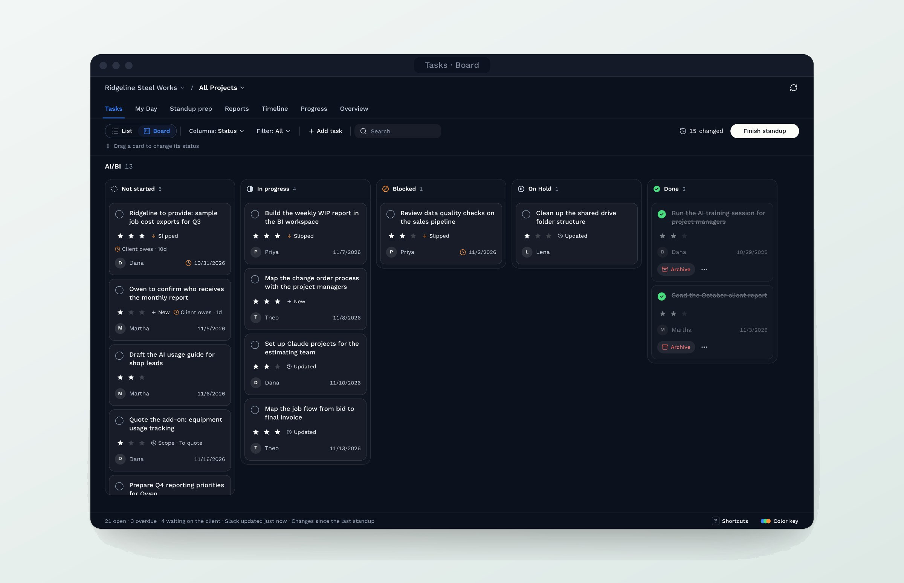

Fig 02. A person approves Claude's draft before anything saves
A live project dashboard built from our weekly standup
A project dashboard for our work with a construction industry client, built around the weekly standup I started. It replaced two Slack lists and updates every day from email, Slack messages, Google Drive, and the transcripts of our standups and client meetings. Claude drafts tasks from those transcripts, and nothing saves until a person approves it. It's now the template for future client dashboards, a key feature in Cerino.
To keep client and company information private, the client, team names, tasks and numbers in these screens and the prototype are made up. The process and design decisions come from the actual project.

Fig 01. The Tasks board, final design, shown with sample data
I joined Consciens early, when the startup had no project management set up. When we took on a client in the construction industry, I started tracking that project's tasks in two Slack lists and started our weekly standup meetings.
The lists held the tasks, but decisions lived in meeting notes in Google Drive, and the latest news came in through Slack messages and email. At standup nobody had one place to see what had changed, what was overdue or what the client owed us. Over five days I designed and built a dashboard that brings all of it together, tested it with the team during a normal work week, and revised it after a design review.
Our standups and client meetings are recorded and transcribed. The dashboard pulls each transcript from Google Drive, Claude drafts the summary, decisions and new tasks, and nothing saves until someone on the team accepts it.
Fig 02. A person approves Claude's draft before anything saves
My Day became the team's favorite feature. It shows each person only their own work for the day, including what's overdue, what changed since the last standup and what's waiting on the client.

Fig 03. My Day: one person's work for the day
The dashboard is now the standard template for client dashboards in Cerino, and Devendra approved extending my work to more project areas.
The full version walks through the research, the tools I compared, the design review with the team, the decisions and trade-offs, and a clickable prototype of the dashboard. Since it's client work, it's password protected. Feel free to email me for the password.